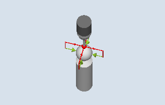

Mit dieser Messvariante kann ein Werkstückmesstaster mit einer beliebigen Lage im Raum kalibriert werden. Dies hat eine besondere Bedeutung im Zusammenhang mit Schwenkfunktionen und Transformationen.
Es werden die gleichen Kalibrierdaten wie beim Kalibrieren im Ring erzeugt:
Schieflage des Werkstückmesstasters
Triggerwerte
Radius der Messtasterkugel.
Zusätzlich kann über das Maschinendatum die Länge des Messtasters in der Werkzeugachse bestimmt werden:
MD51740 $MNS_MEA_FUNCTION_MASK, Bit 1 (Messtasterkugelmitte oder -kugelumfang)
Als Zusatzergebnis wird die Kalibrierkugelmitte ermittelt.
| Hinweis |
|
Bei der Variante "Positionieren auf Kreisbahn", erfolgt das Positionieren um jeweils 90°, immer in mathematisch positiver Richtung. |
Der Ablauf der Messung unterteilt sich in folgende Abschnitte:
Bestimmung der Mittelpunktskoordinaten der Referenzkugel
Ermitteln der Kalibrierdaten
Dieser Ablauf kann grundsätzlich achsparallel durch Überfahren oder Umfahren der Referenzkugel erfolgen.
Abgleich an Kugel (CYCLE976), Beispiel Überfahren (Zwischenpositionieren achsparallel)
Der Durchmesser der Referenzkugel muss bekannt sein.
Werkzeugtyp des Messtasters:
3D Multi-Taster (Typ 710)
Monotaster (Typ 712)
SPOS-fähige Spindel erforderlich.
Der Werkstückmesstaster ist über der Referenzkugel zu positionieren, sodass diese von oben und am Umfang kollisionsfrei angefahren werden kann.
Der Werkstückmesstaster befindet sich über der Kugelmitte.
Siehe auch:
Abgleich: Taster an Kugel (CYCLE976)